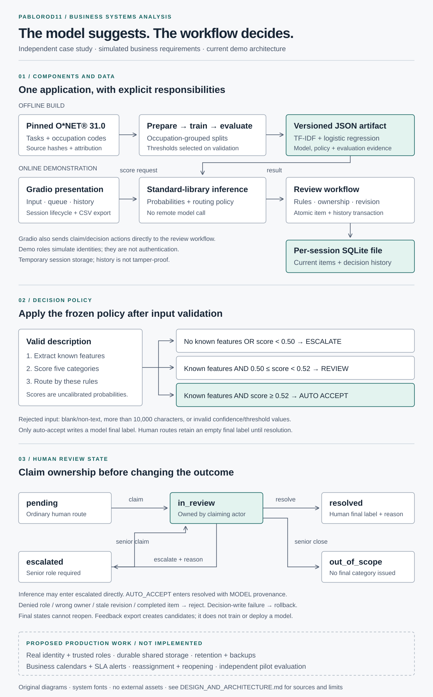

Your review desk is ready
Add a prediction or the guided cases to begin.
Turn a model suggestion into a traceable decision.
Independent case study with simulated business requirements. Runs on your device. No paid compute, API key, or external inference service.
Describe the work, then see both the suggestion and the next step.
Adds three fictional cases. Open Review to inspect the accepted suggestion and two escalations.
Scope: selected software, finance, healthcare, education, and trades occupations. Unrelated text can still receive a supported label. Use fictional, non-sensitive text.
Unresolved records keep their final labels empty. Records belong to this browser tab.
| Record | Suggestion | Confidence | State | Final label | Source |
|---|
Add a prediction or the guided cases to begin.
Roles are simulated. Anyone can switch identities. This is not authentication.
The downloaded JSON includes work descriptions, decision reasons, and history for resolved human decisions. It is not encrypted. Use fictional, non-sensitive data and inspect the file before sharing. Exporting does not retrain the model.
This free hosted version uses temporary sessionStorage in this browser tab. There is no SQLite server, real identity, shared queue, cross-user lock, or tamper-proof audit. Closing the tab normally ends its session; browser restore settings may retain it. Clear it explicitly when finished.
173 task statements from 10 occupations. Benchmark results, not measured business outcomes.
Frozen policy: auto-accept at 52% or above; ordinary review from 50% to below 52%; escalate below 50%. No known vocabulary always escalates. Thresholds use validation only. Probabilities are uncalibrated.
| Category | Precision | Recall | F1 | Test tasks |
|---|
Read the weak spot: SOFTWARE recall is 53.8% on just 13 tasks from one occupation. The overall score does not establish real-job accuracy.
The five categories are project decisions. Other occupations are excluded; there is no OTHER class. Related wording can remain after exact deduplication. The test has limited independent occupational diversity.
Open the model, weights, provenance, and full model card ↗The original Python companion uses Gradio and SQLite. The diagram below describes that companion, not the storage architecture of this Static Space.

Download the original architecture diagramThe same trained weights, probabilities, frozen routing thresholds, withheld unresolved labels, senior-only escalations, immutable final decisions, reasons, provenance, and simulated role boundaries. Browser inference is parity-tested against Python.
Authenticated identities, server-enforced permissions, durable shared storage, backups, cross-user concurrency, SLA alerts, reassignment, reopening, and retraining. There were no stakeholder interviews or business sign-off.
Independent case study with simulated business requirements. Prepared for PabloRod11. A hypothetical workforce analytics team needs to classify descriptions without silently turning uncertain model guesses into final business labels.
An ordinary reviewer handles routine items, a senior adjudicator handles escalations and unsupported work, and an audit reader inspects decisions. All identities here are simulated. Missing input is rejected; unknown vocabulary escalates; an unresolved record has no final label; out-of-scope closure issues no category.
The original notebook silently routed NaN to escalation. The Python version now rejects malformed confidence and tests boundaries. A later review found a wrong standalone model path; the loader was corrected and retested. This browser port additionally checks every held-out probability against the Python implementation.
Download the full Python project, BSA requirements, tests, and design review